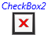
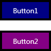
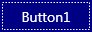

Настройка внешнего вида существующего элемента управления путем создания объекта ControlTemplate
Объект ControlTemplate указывает визуальную структуру и визуальное поведение элемента управления. Можно настроить внешний вид элемента управления, предоставляя ему новый ControlTemplate. При создании ControlTemplate, заменяется внешний вид существующего элемента управления без изменения его функциональных возможностей. Например, можно сделать кнопки в приложении круглыми вместо установленных по умолчанию квадратных, но кнопка по-прежнему будет вызывать Click событий.
В этом разделе объясняется различные части ControlTemplate, демонстрируется создание простого ControlTemplate для Buttonи объясняется, как понимать контракт элемента управления, таким образом, вы можете настроить его внешний вид. Поскольку создать ControlTemplate в XAML, можно изменить внешний вид элемента управления без написания кода. Можно также использовать конструктор, например Microsoft Expression Blend, чтобы создать шаблоны пользовательского элемента управления. В этом разделе приведены примеры XAML , позволяющие настроить внешний вид Button и перечисляет полном примере в конце этой статьи. Дополнительные сведения об использовании Expression Blend см. в статье Настройка стиля элемента управления, поддерживающего шаблон.
На следующих рисунках Button , использующий ControlTemplate , созданный в этом разделе.
Кнопка, использующая пользовательский шаблон элемента управления
Кнопка, использующая пользовательский шаблон элемента управления, когда на ней находится указатель мыши
Предварительные требования
В этом разделе предполагается, что пользователь понимает процесс создания и использования элементов управления и стилей, который рассматривался в разделе Элементы управления. Основные понятия, описанные в этом разделе применяются к элементам, которые наследуют Control класса, за исключением UserControl. Невозможно применить ControlTemplate для UserControl.
Когда следует создавать объект ControlTemplate
Элементы управления обладают множеством свойств, таких как Background, Foreground, и FontFamily, который можно задать для указания различных аспектов внешнего вида элемента управления, но изменения, внесенные с такими значениями этих свойств ограничены. Например, можно задать Foreground свойство на синий и FontStyle до курсивом на CheckBox.
Без возможности для создания нового ControlTemplate для элементов управления, все элементы управления в каждом WPF-приложения на основе бы же общий внешний вид, что ограничивает возможность создания приложения с помощью пользовательского интерфейса. По умолчанию каждый CheckBox имеет одинаковые характеристики. Например, содержимое CheckBox всегда находится справа от индикатора выделения, и для указания того, что всегда используется флажок CheckBox выбран.
Создании ControlTemplate при необходимости настраивать внешний вид элемента управления за пределы выполнит какие задания других свойств элемента управления. В примере CheckBox, предположим, что вы хотите содержимое над индикатором выделения поля с флажком, и знак x, чтобы указать, что CheckBox выбран. Эти изменения в задаются ControlTemplate из CheckBox.
На следующем рисунке показано CheckBox , по умолчанию использует ControlTemplate.
Элемент управления CheckBox, использующий шаблон элемента управления по умолчанию
На следующем рисунке показано CheckBox , использующий пользовательский ControlTemplate для размещения содержимого CheckBox над индикатором выделения и отображения знака X при CheckBox выбран.

Элемент управления CheckBox, использующий пользовательский шаблон элемента управления
ControlTemplate Для CheckBox в этом примере является относительно сложным, поэтому в этом разделе используется более простой пример создания ControlTemplate для Button.
Изменение визуальной структуры элемента управления
В WPF, элемент управления часто является составным FrameworkElement объектов. При создании ControlTemplate, объединении FrameworkElement объектов для построения одного элемента управления. Объект ControlTemplate должен иметь только один FrameworkElement качестве корневого элемента. Корневой элемент обычно содержит другие FrameworkElement объектов. Комбинация объектов составляет визуальную структуру элемента управления.
В следующем примере создается пользовательский ControlTemplate для Button. ControlTemplate Создает визуальную структуру элемента Button. В этом примере не меняется внешний вид кнопки при перемещении на нее указателя мыши или при ее нажатии. Изменение внешнего вида кнопки при ее переходе в другое состояние рассматривается далее в этом разделе.
В данном примере визуальная структура состоит из следующих частей:
Объект Border с именем
RootElementкоторый выступает в качестве корневого шаблона FrameworkElement.Объект Grid то есть является потомком
RootElement.Объект ContentPresenter , отображающий содержимое кнопки. ContentPresenter Позволяет любой тип объекта для отображения.
<ControlTemplate TargetType="Button">
<Border Name="RootElement">
<!--Create the SolidColorBrush for the Background
as an object elemment and give it a name so
it can be referred to elsewhere in the
control template.-->
<Border.Background>
<SolidColorBrush x:Name="BorderBrush" Color="Black"/>
</Border.Background>
<!--Create a border that has a different color
by adding smaller grid. The background of
this grid is specificied by the button's
Background property.-->
<Grid Margin="4" Background="{TemplateBinding Background}">
<!--Use a ContentPresenter to display the Content of
the Button.-->
<ContentPresenter
HorizontalAlignment="{TemplateBinding HorizontalContentAlignment}"
VerticalAlignment="{TemplateBinding VerticalContentAlignment}"
Margin="4,5,4,4" />
</Grid>
</Border>
</ControlTemplate>
Сохранение функциональности свойств элемента управления с помощью TemplateBinding
При создании нового ControlTemplate, по-прежнему может потребоваться использовать общие свойства для изменения внешнего вида элемента управления. TemplateBinding расширение разметки привязывает свойство элемента, который находится в ControlTemplate на открытое свойство, которое определяется элементом управления. Использование расширения TemplateBinding позволяет свойствам элемента управления действовать в качестве параметров шаблона. Это означает, что при задании свойства элемента управления соответствующее значение передается в элемент, который содержит TemplateBinding.
В следующем примере повторяется часть предыдущего примера, который использует TemplateBinding расширение разметки для привязки свойств элементов, которые находятся в ControlTemplate к общим свойствам, которые определены на кнопке.
<Grid Margin="4" Background="{TemplateBinding Background}">
<!--Use a ContentPresenter to display the Content of
the Button.-->
<ContentPresenter
HorizontalAlignment="{TemplateBinding HorizontalContentAlignment}"
VerticalAlignment="{TemplateBinding VerticalContentAlignment}"
Margin="4,5,4,4" />
</Grid>
В этом примере Grid имеет его Panel.Background шаблон свойство привязан к Control.Background. Так как Panel.Background будет привязано к шаблону, можно создать несколько кнопок, используйте тот же ControlTemplate и задайте Control.Background в разные значения для каждой кнопки. Если Control.Background шаблон не был привязан к свойству элемента в ControlTemplate, задание Control.Background кнопки бы не оказывают влияния на внешний вид кнопки.
Следует отметить, что не требуется, чтобы имена этих двух свойств совпадали. В приведенном выше примере Control.HorizontalContentAlignment свойство Button привязано к шаблону FrameworkElement.HorizontalAlignment свойство ContentPresenter. Это позволяет располагать содержимое кнопки горизонтально. ContentPresenter не поддерживает свойство с именем HorizontalContentAlignment, но Control.HorizontalContentAlignment могут быть привязаны к FrameworkElement.HorizontalAlignment. Перед привязкой свойства к шаблону следует убедиться, что целевое и исходное свойства имеют один и тот же тип.
Control Класс определяет несколько свойств, которые должны использоваться шаблон элемента управления, чтобы оказывать влияние на элемент управления, если они находятся. Каким образом ControlTemplate использует свойство зависит от свойства. ControlTemplate Необходимо использовать свойство одним из следующих способов:
Элемент в ControlTemplate шаблон привязывается к свойству.
Элемент в ControlTemplate наследует свойство от родительского объекта FrameworkElement.
В следующей таблице перечислены визуальные свойства, наследуемые элементом управления от Control класса. В таблице также указывается, использует ли шаблон элемента управления по умолчанию значение наследуемого свойства или оно должно быть привязано к шаблону.
| Свойство | Способ использования |
|---|---|
| Background | Привязка к шаблону |
| BorderThickness | Привязка к шаблону |
| BorderBrush | Привязка к шаблону |
| FontFamily | Наследование свойства или привязка к шаблону |
| FontSize | Наследование свойства или привязка к шаблону |
| FontStretch | Наследование свойства или привязка к шаблону |
| FontWeight | Наследование свойства или привязка к шаблону |
| Foreground | Наследование свойства или привязка к шаблону |
| HorizontalContentAlignment | Привязка к шаблону |
| Padding | Привязка к шаблону |
| VerticalContentAlignment | Привязка к шаблону |
В таблице перечислены только визуальные свойства, наследуемые от Control класса. Кроме свойств, приведенных в таблице, элемент управления может также наследовать DataContext, Language, и TextDecorations свойства из родительского элемента структуры.
Кроме того Если ContentPresenter в ControlTemplate из ContentControl, ContentPresenter будет автоматически привязан к ContentTemplate и Content свойства. Аналогичным образом ItemsPresenter , который находится в ControlTemplate из ItemsControl будет автоматически привязан к Items и ItemsPresenter свойства.
В следующем примере создается две кнопки, использующих ControlTemplate определенный в предыдущем примере. В примере задается Background, Foreground, и FontSize свойства для каждой из кнопок. Установка Background свойство оказывает влияние, поскольку это привязано к шаблону ControlTemplate. Несмотря на то что Foreground и FontSize свойства не привязано к шаблону, их настройке оказывает влияние, поскольку их значения являются наследуемыми.
<StackPanel>
<Button Style="{StaticResource newTemplate}"
Background="Navy" Foreground="White" FontSize="14"
Content="Button1"/>
<Button Style="{StaticResource newTemplate}"
Background="Purple" Foreground="White" FontSize="14"
Content="Button2" HorizontalContentAlignment="Left"/>
</StackPanel>
В предыдущем примере получался результат, аналогичный показанному на следующем рисунке.

Две кнопки с различными цветами фона
Изменение внешнего вида элемента управления в зависимости от его состояния
Разница между кнопкой с внешним видом по умолчанию и кнопкой из предыдущего примера состоит в том, что кнопка по умолчанию слегка изменяется при переходе в другое состояние. Например, внешний вид кнопки по умолчанию изменяется при нажатии этой кнопки или при наведении на нее указателя мыши. Несмотря на то что ControlTemplate изменяет функциональность элемента управления, это приводит к изменению визуальное поведение элемента управления. Визуальное поведение описывает внешний вид элемента управления в определенных состояниях. Чтобы лучше понять разницу между функциональностью и визуальным поведением элемента управления, рассмотрим пример с кнопкой. Функциональность кнопки должно инициировать Click событие при ее нажатии, а визуальное поведение кнопки состоит в том, чтобы изменять внешний вид при нажатии или на которые указывают.
Использовании VisualState объекты для указания вида элемента управления, когда он находится в определенном состоянии. Объект VisualState содержит Storyboard изменяет внешний вид элементов, которые находятся в ControlTemplate. Нет необходимости писать код, чтобы это происходило, поскольку логика элемента управления изменяет состояние с помощью VisualStateManager. Когда элемент управления переходит в состояние, которое определяется VisualState.Name свойства Storyboard начинается. Когда элемент управления выходит из состояния, Storyboard останавливается.
В следующем примере показан VisualState , изменяет внешний вид Button когда указатель мыши находится над ней. Storyboard Изменяет цвет границы кнопки, изменив цвет BorderBrush. При ссылке на ControlTemplate пример в начале этого раздела, можно увидеть, что BorderBrush имя SolidColorBrush , назначенный Background из Border.
<!--Change the border of the button to red when the
mouse is over the button.-->
<VisualState x:Name="MouseOver">
<Storyboard>
<ColorAnimation Storyboard.TargetName="BorderBrush"
Storyboard.TargetProperty="Color"
To="Red" />
</Storyboard>
</VisualState>
Элемент управления отвечает за определение состояний как часть своего контракта, что подробно рассматривается в подразделе Настройка других элементов управления через понимание контракта элемента управления далее в этом разделе. В следующей таблице перечислены состояния, которые указаны для Button.
| Имя VisualState | Имя VisualStateGroup | Описание |
|---|---|---|
| Норм. | CommonStates | Состояние по умолчанию. |
| MouseOver | CommonStates | Указатель мыши расположен в элементе управления. |
| Нажато | CommonStates | Элемент управления нажат. |
| Отключено | CommonStates | Элемент управления отключен. |
| Focused | FocusStates | Элемент управления имеет фокус. |
| Без фокуса ввода | FocusStates | Элемент управления не имеет фокуса. |
Button Определяет две группы: CommonStates группа содержит Normal, MouseOver, Pressed, и Disabled состояний. Группа FocusStates содержит состояния Focused и Unfocused. Состояния, входящие в одну группу, являются взаимоисключающими. Элемент управления всегда находится строго в одном состоянии из каждой группы. Например Button могут иметь фокус, даже в том случае, когда указатель мыши не наведен, поэтому Button в Focused состояние может быть в MouseOver, Pressed, или Normal состояния.
Добавляемые VisualState объектов VisualStateGroup объектов. Добавляемые VisualStateGroup объектов VisualStateManager.VisualStateGroups вложенного свойства зависимостей. В следующем примере определяется VisualState объектов для Normal, MouseOver, и Pressed состояний, которые входят в CommonStates группы. Name Каждого VisualState соответствует имени в предыдущей таблице. Состояние Disabled и состояния из группы FocusStates опущены для сохранения краткости примера, но они включены в полный пример, приведенный в конце этого раздела.
Note
Не забудьте задать VisualStateManager.VisualStateGroups присоединенного свойства в корне FrameworkElement из ControlTemplate.
<ControlTemplate TargetType="Button">
<Border Name="RootElement">
<VisualStateManager.VisualStateGroups>
<!--Define the states and transitions for the common states.
The states in the VisualStateGroup are mutually exclusive to
each other.-->
<VisualStateGroup Name="CommonStates">
<!--The Normal state is the state the button is in
when it is not in another state from this VisualStateGroup.-->
<VisualState Name="Normal" />
<!--Change the SolidColorBrush, BorderBrush, to red when the
mouse is over the button.-->
<VisualState Name="MouseOver">
<Storyboard>
<ColorAnimation Storyboard.TargetName="BorderBrush"
Storyboard.TargetProperty="Color"
To="Red" />
</Storyboard>
</VisualState>
<!--Change the SolidColorBrush, BorderBrush, to Transparent when the
button is pressed.-->
<VisualState Name="Pressed">
<Storyboard>
<ColorAnimation Storyboard.TargetName="BorderBrush"
Storyboard.TargetProperty="Color"
To="Transparent"/>
</Storyboard>
</VisualState>
<!--The Disabled state is omitted for brevity.-->
</VisualStateGroup>
</VisualStateManager.VisualStateGroups>
<Border.Background>
<SolidColorBrush x:Name="BorderBrush" Color="Black"/>
</Border.Background>
<Grid Background="{TemplateBinding Background}" Margin="4">
<ContentPresenter
HorizontalAlignment="{TemplateBinding HorizontalContentAlignment}"
VerticalAlignment="{TemplateBinding VerticalContentAlignment}"
Margin="4,5,4,4" />
</Grid>
</Border>
</ControlTemplate>
В предыдущем примере получался результат, аналогичный показанному на следующих рисунках.
Кнопка, использующая пользовательский шаблон элемента управления в нормальном состоянии
Кнопка, использующая пользовательский шаблон элемента управления в состоянии, когда указатель мыши находится над кнопкой

Кнопка, использующая пользовательский шаблон элемента управления в состоянии, когда она нажата
Визуальные состояния элементов управления, включенных в WPF, см. в разделе Стили и шаблоны элемента Control.
Задание поведения элемента управления, когда он переходит между состояниями
В предыдущем примере внешний вид кнопки изменяется, когда пользователь нажимает ее, но если кнопка остается нажатой менее полной секунды, то пользователь не видит эффекта нажатия. По умолчанию для запуска анимации требуется одна секунда. Поскольку пользователи, вероятно, нажимают и освобождают кнопку за гораздо меньшее время, Визуальная обратная связь не будет эффективным, если оставить ControlTemplate в состоянии по умолчанию.
Можно указать время, необходимое анимации плавно переходил элемент управления из одного состояния в другое, добавив VisualTransition объектов ControlTemplate. При создании VisualTransition, вы указываете одну или несколько из следующих:
время, которое занимает переход между состояниями;
дополнительные изменения внешнего вида элемента управления, возникающие во время перехода;
Какие состояния VisualTransition применяется к.
Задание продолжительности перехода
Можно указать, сколько времени занимает переход, задав GeneratedDuration свойство. В предыдущем примере имеется VisualState , указывающий, что граница кнопки становится прозрачной при нажатии кнопки, но анимация продолжается слишком долго, чтобы быть заметной при быстро нажата и отпущена кнопка. Можно использовать VisualTransition для задания периода времени занимает элемент управления переходить в нажатом состоянии. В следующем примере задается, что переход элемента управления в нажатое состояние занимает одну сотую секунды.
<!--Take one hundredth of a second to transition to the
Pressed state.-->
<VisualTransition To="Pressed"
GeneratedDuration="0:0:0.01" />
Задание изменений внешнего вида элемента управления во время перехода
VisualTransition Содержит Storyboard , начинается, когда элемент управления переходит между состояниями. Например, можно указать, что определенная анимация происходит при переходе элемента управления из состояния MouseOver в состояние Normal. В следующем примере создается VisualTransition , указывающий, что когда пользователь перемещает указатель мыши за пределы кнопки, граница кнопки изменяет цвет на синий, а затем на желтый и затем на черный в течение полутора секунд.
<!--Take one and a half seconds to transition from the
MouseOver state to the Normal state.
Have the SolidColorBrush, BorderBrush, fade to blue,
then to yellow, and then to black in that time.-->
<VisualTransition From="MouseOver" To="Normal"
GeneratedDuration="0:0:1.5">
<Storyboard>
<ColorAnimationUsingKeyFrames
Storyboard.TargetProperty="Color"
Storyboard.TargetName="BorderBrush"
FillBehavior="HoldEnd" >
<ColorAnimationUsingKeyFrames.KeyFrames>
<LinearColorKeyFrame Value="Blue"
KeyTime="0:0:0.5" />
<LinearColorKeyFrame Value="Yellow"
KeyTime="0:0:1" />
<LinearColorKeyFrame Value="Black"
KeyTime="0:0:1.5" />
</ColorAnimationUsingKeyFrames.KeyFrames>
</ColorAnimationUsingKeyFrames>
</Storyboard>
</VisualTransition>
Указание места применения VisualTransition
Объект VisualTransition можно ограничить только определенными состояниями, или его можно применять в любое время переходы между состояниями элемента управления. В приведенном выше примере VisualTransition применяется, когда элемент управления переходит из MouseOver состояние Normal состоянии; в примере перед ним, VisualTransition применяется, когда элемент управления переходит в Pressed состояние. Ограничивается VisualTransition применяется, задав To и From свойства. В таблице ниже приведено описание уровней ограничений от наибольшего до наименьшего.
| Тип ограничения | Состояние, из которого выполняется переход | Состояние, в которое выполняется переход |
|---|---|---|
| Из указанного состояния в другое указанное состояние | Имя VisualState | Имя VisualState |
| Из любого состояния в указанное состояние | Не задано | Имя VisualState |
| Из указанного состояния в любое состояние | Имя VisualState | Не задано |
| Из любого состояния в любое другое состояние | Не задано | Не задано |
Может иметь несколько VisualTransition объекты в VisualStateGroup , ссылающиеся на том же состоянии, но они будут использоваться в порядке, в предыдущей таблице. В следующем примере есть два VisualTransition объектов. Когда элемент управления переходит из Pressed состояние MouseOver состояние, VisualTransition , содержащую одновременно From и To используется набор. Когда элемент управления переходит из состояния, отличного от Pressed, в состояние MouseOver, используется другой объект.
<!--Take one half second to trasition to the MouseOver state.-->
<VisualTransition To="MouseOver"
GeneratedDuration="0:0:0.5" />
<!--Take one hundredth of a second to transition from the
Pressed state to the MouseOver state.-->
<VisualTransition From="Pressed" To="MouseOver"
GeneratedDuration="0:0:0.01" />
VisualStateGroup Имеет Transitions свойство, содержащее VisualTransition объектов, которые применяются к VisualState объекты в VisualStateGroup. Как ControlTemplate автор, вы можете свободно включать VisualTransition требуется. Тем не менее если To и From свойствам присваиваются имена состояний, не включенных в VisualStateGroup, VisualTransition учитывается.
В следующем примере показан VisualStateGroup для CommonStates. В примере определяется VisualTransition для каждого из следующих кнопки перехода.
в состояние
Pressed;в состояние
MouseOver;из состояния
Pressedв состояниеMouseOver;из состояния
MouseOverв состояниеNormal.
<VisualStateGroup Name="CommonStates">
<!--Define the VisualTransitions that
can be used when the control transitions
between VisualStates that are defined in the
VisualStatGroup.-->
<VisualStateGroup.Transitions>
<!--Take one hundredth of a second to
transition to the Pressed state.-->
<VisualTransition To="Pressed"
GeneratedDuration="0:0:0.01" />
<!--Take one half second to trasition
to the MouseOver state.-->
<VisualTransition To="MouseOver"
GeneratedDuration="0:0:0.5" />
<!--Take one hundredth of a second to transition from the
Pressed state to the MouseOver state.-->
<VisualTransition From="Pressed" To="MouseOver"
GeneratedDuration="0:0:0.01" />
<!--Take one and a half seconds to transition from the
MouseOver state to the Normal state.
Have the SolidColorBrush, BorderBrush, fade to blue,
then to yellow, and then to black in that time.-->
<VisualTransition From="MouseOver" To="Normal"
GeneratedDuration="0:0:1.5">
<Storyboard>
<ColorAnimationUsingKeyFrames
Storyboard.TargetProperty="Color"
Storyboard.TargetName="BorderBrush"
FillBehavior="HoldEnd" >
<ColorAnimationUsingKeyFrames.KeyFrames>
<LinearColorKeyFrame Value="Blue"
KeyTime="0:0:0.5" />
<LinearColorKeyFrame Value="Yellow"
KeyTime="0:0:1" />
<LinearColorKeyFrame Value="Black"
KeyTime="0:0:1.5" />
</ColorAnimationUsingKeyFrames.KeyFrames>
</ColorAnimationUsingKeyFrames>
</Storyboard>
</VisualTransition>
</VisualStateGroup.Transitions>
<!--The remainder of the VisualStateGroup is the
same as the previous example.-->
<VisualState Name="Normal" />
<VisualState Name="MouseOver">
<Storyboard>
<ColorAnimation
Storyboard.TargetName="BorderBrush"
Storyboard.TargetProperty="Color"
To="Red" />
</Storyboard>
</VisualState>
<VisualState Name="Pressed">
<Storyboard>
<ColorAnimation
Storyboard.TargetName="BorderBrush"
Storyboard.TargetProperty="Color"
To="Transparent"/>
</Storyboard>
</VisualState>
<!--The Disabled state is omitted for brevity.-->
</VisualStateGroup>
Настройка других элементов управления через понимание контракта элемента управления
Элемент управления, который использует ControlTemplate для задания визуальной структуры (с помощью FrameworkElement объекты) и визуального поведения (с помощью VisualState объекты) использует модель частей элемента управления. Множество элементов управления, имеющихся в WPF 4, используют эту модель. Части, ControlTemplate автор необходимо учитывать, взаимодействуют с помощью контракта элемента управления. Поняв части контракта элемента управления, можно настроить внешний вид любого элемента управления, использующего модель частей элемента управления.
Контракт элемента управления имеет три элемента:
визуальный элемент, используемый логикой элемента управления;
состояния элемента управления и группа, к которой принадлежит каждое состояние;
общие свойства, визуально воздействующие на элемент управления.
Визуальные элементы в контракте элемента управления
Иногда логика элемента управления взаимодействует с FrameworkElement , который находится в ControlTemplate. Например, элемент управления может обрабатывать событие одного из своих элементов. Когда элемент управления ожидает найти конкретный FrameworkElement в ControlTemplate, он должен передать эти сведения для ControlTemplate автора. Элемент управления использует TemplatePartAttribute для передачи типа элемента, ожидается, что и имя элемента, которое должно быть. Button Имеет FrameworkElement части в контракте элемента управления, но другие элементы управления, такие как ComboBox, сделать.
В следующем примере показан TemplatePartAttribute объекты, которые определены на ComboBox класса. Логика ComboBox ожидает найти TextBox с именем PART_EditableTextBox и Popup с именем PART_Popup в его ControlTemplate.
[TemplatePartAttribute(Name = "PART_EditableTextBox", Type = typeof(TextBox))]
[TemplatePartAttribute(Name = "PART_Popup", Type = typeof(Popup))]
public class ComboBox : ItemsControl
{
}
В следующем примере показано упрощенное ControlTemplate для ComboBox , включающий элементы, которые определяются TemplatePartAttribute объектов на ComboBox класса.
<ControlTemplate TargetType="ComboBox">
<Grid>
<ToggleButton x:Name="DropDownToggle"
HorizontalAlignment="Stretch" VerticalAlignment="Stretch"
Margin="-1" HorizontalContentAlignment="Right"
IsChecked="{Binding Path=IsDropDownOpen,Mode=TwoWay,
RelativeSource={RelativeSource TemplatedParent}}">
<Path x:Name="BtnArrow" Height="4" Width="8"
Stretch="Uniform" Margin="0,0,6,0" Fill="Black"
Data="F1 M 300,-190L 310,-190L 305,-183L 301,-190 Z " />
</ToggleButton>
<ContentPresenter x:Name="ContentPresenter" Margin="6,2,25,2"
Content="{TemplateBinding SelectionBoxItem}"
ContentTemplate="{TemplateBinding SelectionBoxItemTemplate}"
ContentTemplateSelector="{TemplateBinding ItemTemplateSelector}">
</ContentPresenter>
<TextBox x:Name="PART_EditableTextBox"
Style="{x:Null}"
Focusable="False"
Background="{TemplateBinding Background}"
HorizontalAlignment="Left"
VerticalAlignment="Center"
Margin="3,3,23,3"
Visibility="Hidden"
IsReadOnly="{TemplateBinding IsReadOnly}"/>
<Popup x:Name="PART_Popup"
IsOpen="{TemplateBinding IsDropDownOpen}">
<Border x:Name="PopupBorder"
HorizontalAlignment="Stretch" Height="Auto"
MinWidth="{TemplateBinding ActualWidth}"
MaxHeight="{TemplateBinding MaxDropDownHeight}"
BorderThickness="{TemplateBinding BorderThickness}"
BorderBrush="Black" Background="White" CornerRadius="3">
<ScrollViewer x:Name="ScrollViewer" BorderThickness="0" Padding="1">
<ItemsPresenter/>
</ScrollViewer>
</Border>
</Popup>
</Grid>
</ControlTemplate>
Состояния в контракте элемента управления
Состояния элемента управления также являются частью контракта элемента управления. Пример создания ControlTemplate для Button показано, как задавать внешний вид Button зависимости от его состояния. Создании VisualState для каждого указанного состояния и помещения всех VisualState объектов данной общей папки GroupName в VisualStateGroup, как описано в разделе изменение внешнего вида элемента управления в зависимости от его состояния ранее в этом раздел. Сторонние элементы управления должны указывать состояния с помощью TemplateVisualStateAttribute, который позволяет средствам разработки, таким как Expression Blend, чтобы предоставить состояния элемента управления для создания шаблонов элементов управления.
Контракты элементов управления, включенных в WPF, в разделе Стили и шаблоны элемента Control.
Свойства в контракте элемента управления
Общие свойства, визуально влияющие на элемент управления, также включаются в контракт элемента управления. Можно задать эти свойства, чтобы изменить внешний вид элемента управления без создания нового ControlTemplate. Можно также использовать TemplateBinding расширение разметки для привязки свойств элементов, которые находятся в ControlTemplate к общим свойствам, которые определяются Button.
В следующем примере показан контракт элемента управления "Кнопка".
[TemplateVisualState(Name = "Normal", GroupName = "CommonStates")]
[TemplateVisualState(Name = "MouseOver", GroupName = "CommonStates")]
[TemplateVisualState(Name = "Pressed", GroupName = "CommonStates")]
[TemplateVisualState(Name = "Disabled", GroupName = "CommonStates")]
[TemplateVisualState(Name = "Unfocused", GroupName = "FocusStates")]
[TemplateVisualState(Name = "Focused", GroupName = "FocusStates")]
public class Button : ButtonBase
{
public static readonly DependencyProperty BackgroundProperty;
public static readonly DependencyProperty BorderBrushProperty;
public static readonly DependencyProperty BorderThicknessProperty;
public static readonly DependencyProperty ContentProperty;
public static readonly DependencyProperty ContentTemplateProperty;
public static readonly DependencyProperty FontFamilyProperty;
public static readonly DependencyProperty FontSizeProperty;
public static readonly DependencyProperty FontStretchProperty;
public static readonly DependencyProperty FontStyleProperty;
public static readonly DependencyProperty FontWeightProperty;
public static readonly DependencyProperty ForegroundProperty;
public static readonly DependencyProperty HorizontalContentAlignmentProperty;
public static readonly DependencyProperty PaddingProperty;
public static readonly DependencyProperty TextAlignmentProperty;
public static readonly DependencyProperty TextDecorationsProperty;
public static readonly DependencyProperty TextWrappingProperty;
public static readonly DependencyProperty VerticalContentAlignmentProperty;
public Brush Background { get; set; }
public Brush BorderBrush { get; set; }
public Thickness BorderThickness { get; set; }
public object Content { get; set; }
public DataTemplate ContentTemplate { get; set; }
public FontFamily FontFamily { get; set; }
public double FontSize { get; set; }
public FontStretch FontStretch { get; set; }
public FontStyle FontStyle { get; set; }
public FontWeight FontWeight { get; set; }
public Brush Foreground { get; set; }
public HorizontalAlignment HorizontalContentAlignment { get; set; }
public Thickness Padding { get; set; }
public TextAlignment TextAlignment { get; set; }
public TextDecorationCollection TextDecorations { get; set; }
public TextWrapping TextWrapping { get; set; }
public VerticalAlignment VerticalContentAlignment { get; set; }
}
При создании ControlTemplate, часто бывает проще начать с существующего ControlTemplate и внести в него изменения. Можно выполнить одно из следующих действий, чтобы изменить существующий ControlTemplate:
Воспользоваться конструктором, таким как Expression Blend, который предоставляет графический пользовательский интерфейс для создания шаблонов элементов управления. Дополнительные сведения см. в статье Настройка стиля элемента управления, поддерживающего шаблон.
Установленный по умолчанию ControlTemplate и изменить его. Шаблоны элементов управления по умолчанию, включенных в WPF, см. в документе Default WPF Themes.
Полный пример
В следующем примере показан полный ButtonControlTemplate , рассматривается в этом разделе.
<StackPanel>
<StackPanel.Resources>
<Style TargetType="Button" x:Key="newTemplate">
<!--Set the Background, Foreground, FontSize, Width,
Height, Margin, and Template properties for
the Button.-->
<Setter Property="Background" Value="Navy"/>
<Setter Property="Foreground" Value="White"/>
<Setter Property="FontSize" Value="14"/>
<Setter Property="Width" Value="100"/>
<Setter Property="Height" Value="40"/>
<Setter Property="Margin" Value="10"/>
<Setter Property="HorizontalContentAlignment" Value="Center"/>
<Setter Property="VerticalContentAlignment" Value="Center"/>
<Setter Property="Template">
<Setter.Value>
<ControlTemplate TargetType="Button">
<Border x:Name="RootElement">
<VisualStateManager.VisualStateGroups>
<!--Define the states and transitions for the common states.
The states in the VisualStateGroup are mutually exclusive to
each other.-->
<VisualStateGroup Name="CommonStates">
<!--Define the VisualTransitions that can be used when the control
transitions between VisualStates that are defined in the
VisualStatGroup.-->
<VisualStateGroup.Transitions>
<!--Take one hundredth of a second to transition to the
Pressed state.-->
<VisualTransition To="Pressed"
GeneratedDuration="0:0:0.01" />
<!--Take one half second to trasition to the MouseOver state.-->
<VisualTransition To="MouseOver"
GeneratedDuration="0:0:0.5" />
<!--Take one hundredth of a second to transition from the
Pressed state to the MouseOver state.-->
<VisualTransition From="Pressed" To="MouseOver"
GeneratedDuration="0:0:0.01" />
<!--Take one and a half seconds to transition from the
MouseOver state to the Normal state.
Have the SolidColorBrush, BorderBrush, fade to blue,
then to yellow, and then to black in that time.-->
<VisualTransition From="MouseOver" To="Normal"
GeneratedDuration="0:0:1.5">
<Storyboard>
<ColorAnimationUsingKeyFrames
Storyboard.TargetProperty="Color"
Storyboard.TargetName="BorderBrush"
FillBehavior="HoldEnd" >
<ColorAnimationUsingKeyFrames.KeyFrames>
<LinearColorKeyFrame Value="Blue"
KeyTime="0:0:0.5" />
<LinearColorKeyFrame Value="Yellow"
KeyTime="0:0:1" />
<LinearColorKeyFrame Value="Black"
KeyTime="0:0:1.5" />
</ColorAnimationUsingKeyFrames.KeyFrames>
</ColorAnimationUsingKeyFrames>
</Storyboard>
</VisualTransition>
</VisualStateGroup.Transitions>
<!--The Normal state is the state the button is in
when it is not in another state from this VisualStateGroup.
There is no special visual behavior for this state, but
the VisualState must be defined in order for the button
to return to its initial state.-->
<VisualState x:Name="Normal" />
<!--Change the border of the button to red when the
mouse is over the button.-->
<VisualState x:Name="MouseOver">
<Storyboard>
<ColorAnimation Storyboard.TargetName="BorderBrush"
Storyboard.TargetProperty="Color"
To="Red" />
</Storyboard>
</VisualState>
<!--Change the border of the button to Transparent when the
button is pressed.-->
<VisualState x:Name="Pressed">
<Storyboard >
<ColorAnimation Storyboard.TargetName="BorderBrush"
Storyboard.TargetProperty="Color"
To="Transparent"
/>
</Storyboard>
</VisualState>
<!--Show the DisabledRect when the IsEnabled property on
the button is false.-->
<VisualState x:Name="Disabled">
<Storyboard>
<DoubleAnimation Storyboard.TargetName="DisabledRect"
Storyboard.TargetProperty="Opacity"
To="1" Duration="0" />
</Storyboard>
</VisualState>
</VisualStateGroup>
<!--Define the states and transitions for the focus states.
The states in the VisualStateGroup are mutually exclusive to
each other.-->
<VisualStateGroup x:Name="FocusStates">
<!--Define the VisualStates in this VistualStateGroup.-->
<VisualState x:Name="Focused">
<Storyboard>
<ObjectAnimationUsingKeyFrames
Storyboard.TargetName="FocusVisual"
Storyboard.TargetProperty="Visibility" Duration
="0">
<DiscreteObjectKeyFrame KeyTime="0">
<DiscreteObjectKeyFrame.Value>
<Visibility>Visible</Visibility>
</DiscreteObjectKeyFrame.Value>
</DiscreteObjectKeyFrame>
</ObjectAnimationUsingKeyFrames>
</Storyboard>
</VisualState>
<VisualState x:Name="Unfocused">
<Storyboard>
<ObjectAnimationUsingKeyFrames
Storyboard.TargetName="FocusVisual"
Storyboard.TargetProperty="Visibility"
Duration="0">
<DiscreteObjectKeyFrame KeyTime="0">
<DiscreteObjectKeyFrame.Value>
<Visibility>Collapsed</Visibility>
</DiscreteObjectKeyFrame.Value>
</DiscreteObjectKeyFrame>
</ObjectAnimationUsingKeyFrames>
</Storyboard>
</VisualState>
</VisualStateGroup>
</VisualStateManager.VisualStateGroups>
<!--Create the SolidColorBrush for the Background
as an object elemment and give it a name so
it can be referred to elsewhere in the control template.-->
<Border.Background>
<SolidColorBrush x:Name="BorderBrush" Color="Black"/>
</Border.Background>
<!--Create a border that has a different color by adding smaller grid.
The background of this grid is specified by the button's Background
property.-->
<Grid Background="{TemplateBinding Background}" Margin="4">
<!--Create a Rectangle that indicates that the
Button has focus.-->
<Rectangle Name="FocusVisual"
Visibility="Collapsed" Margin="2"
Stroke="{TemplateBinding Foreground}"
StrokeThickness="1"
StrokeDashArray="1.5 1.5"/>
<!--Use a ContentPresenter to display the Content of
the Button.-->
<ContentPresenter
HorizontalAlignment="{TemplateBinding HorizontalContentAlignment}"
VerticalAlignment="{TemplateBinding VerticalContentAlignment}"
Margin="4,5,4,4" />
<!--Create a rectangle that causes the button to appear
grayed out when it is disabled.-->
<Rectangle x:Name="DisabledRect"
Fill="#A5FFFFFF"
Opacity="0" IsHitTestVisible="false" />
</Grid>
</Border>
</ControlTemplate>
</Setter.Value>
</Setter>
</Style>
</StackPanel.Resources>
<Button Style="{StaticResource newTemplate}"
Content="Button1"/>
<Button Style="{StaticResource newTemplate}"
Background="Purple"
Content="Button2" />
</StackPanel>